Abstract
Synthesizing novel views of dynamic humans from stationary monocular cameras
is a popular scenario. This is particularly attractive as it does not require static
scenes, controlled environments, or specialized hardware. In contrast to techniques
that exploit multi-view observations to constrain the modeling, given a single fixed
viewpoint only, the problem of modeling the dynamic scene is significantly more
under-constrained and ill-posed. In this paper, we introduce Neural Motion Consensus Flow (MoCo-Flow), a representation that models the dynamic scene using a
4D continuous time-variant function. The proposed representation is learned by an
optimization which models a dynamic scene that minimizes the error of rendering
all observation images. At the heart of our work lies a novel optimization formulation, which is constrained by a motion consensus regularization on the motion
flow. We extensively evaluate MoCo-Flow on several datasets that contain human
motions of varying complexity, and compare, both qualitatively and quantitatively,
to several baseline methods and variants of our methods.
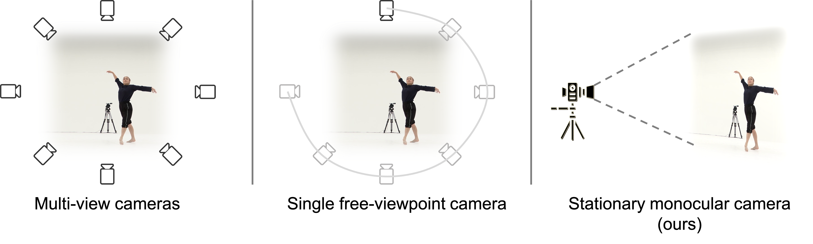
Figure 1: (Left) Multi-view cameras setup for full observation of the dynamic scene; (middle) single
free-viewpoint camera setup that captures the dynamics from varying viewpoints; (right/ours) stationary monocular camera which observes the dynamic scene from one single fixed viewpoint only.
Results
In the following, we show the novel view synthesis results of MoCo-Flow on People-Snapshot, AIST, and ZJU-MoCap datasets. Note that the input, which is shown in the middle of each result, is only a video clip captured using a stationary monocular camera.
People-Snapshot
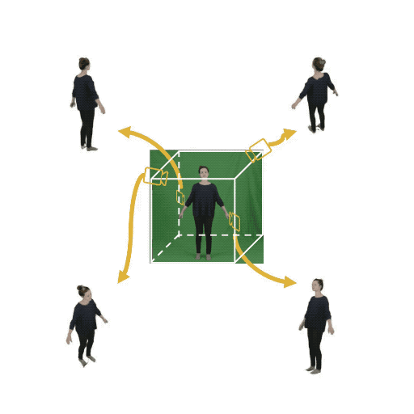
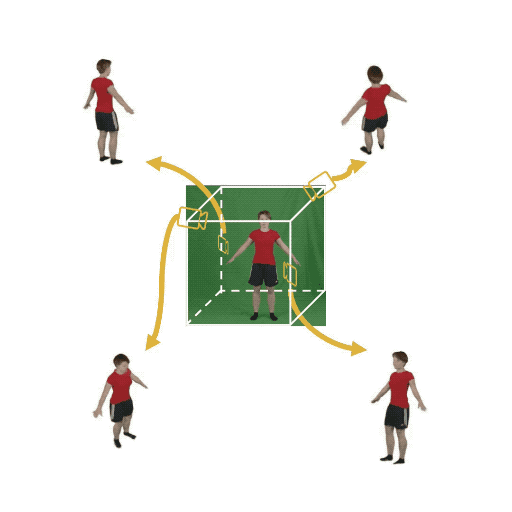
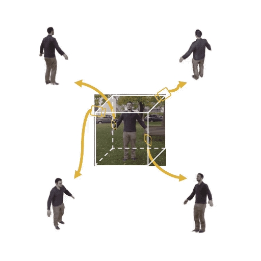
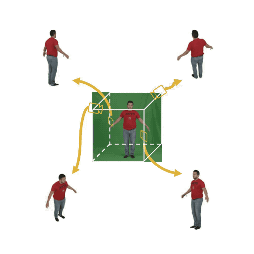
AIST
ZJU-MoCap
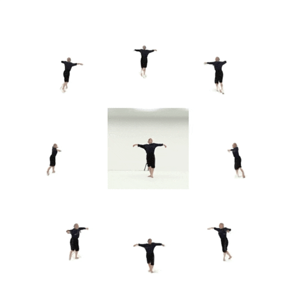
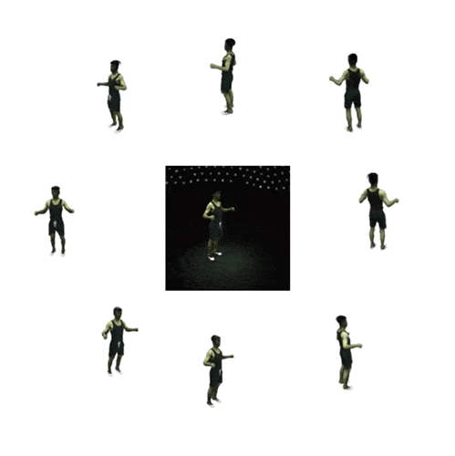
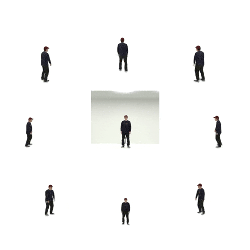
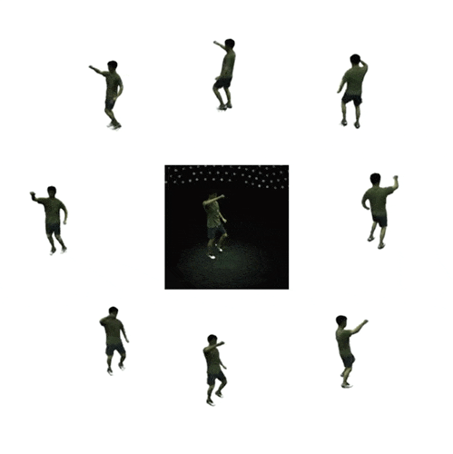
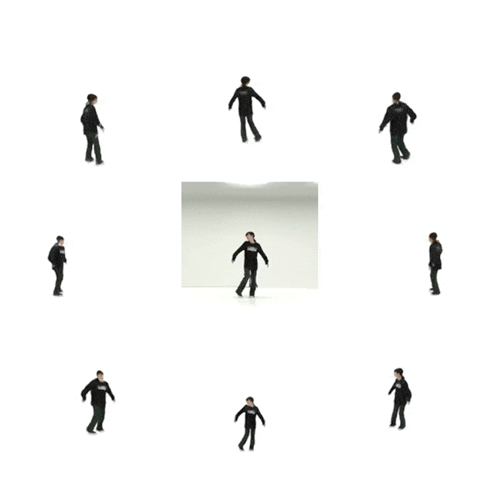
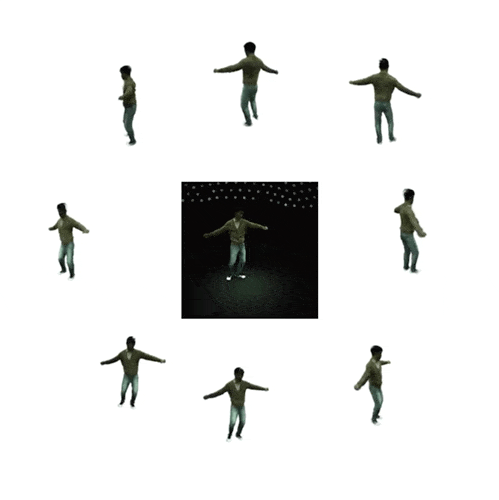
References
[AIST] Shuhei Tsuchida, Satoru Fukayama, Masahiro Hamasaki, and Masataka Goto. AIST Dance Video Database: Multi-genre, Multi-dancer, and Multi-camera Database for Dance Information Processing. In Proceedings ofthe 20th International Society for Music Information Retrieval Conference, ISMIR 2019, pages 501–510, Delft, Netherlands, November 2019.
[NeuralBody] Sida Peng, Yuanqing Zhang, Yinghao Xu, Qianqian Wang, Qing Shuai, Hujun Bao, and Xiaowei Zhou. Neural Body: Implicit Neural Representations with Structured Latent Codes for Novel View Synthesis of Dynamic Humans. In Conference on Computer Vision and Pattern Recognition (CVPR), 2021.
[People-Snapshot] Thiemo Alldieck, Marcus Magnor, Weipeng Xu, Christian Theobalt, and Gerard Pons-Moll. Video Based Reconstruction of 3d People Models. In Conference on Computer Vision and Pattern Recognition (CVPR), pages 8387–8397, Jun 2018.
[D-NeRF] Albert Pumarola, Enric Corona, Gerard Pons-Moll, and Francesc Moreno-Noguer. D-NeRF: Neural Radiance Fields for Dynamic Scenes. In Conference on Computer Vision and Pattern Recognition (CVPR), 2021.
[NSFF] Zhengqi Li, Simon Niklaus, Noah Snavely, and Oliver Wang. Neural Scene Flow Fields for Space-time View Synthesis of Dynamic Scenes. In Conference on Computer Vision and Pattern Recognition (CVPR), 2021.


 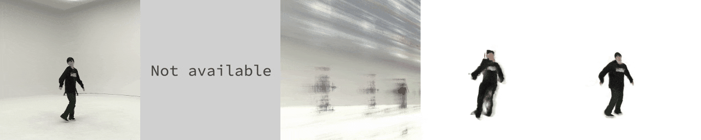
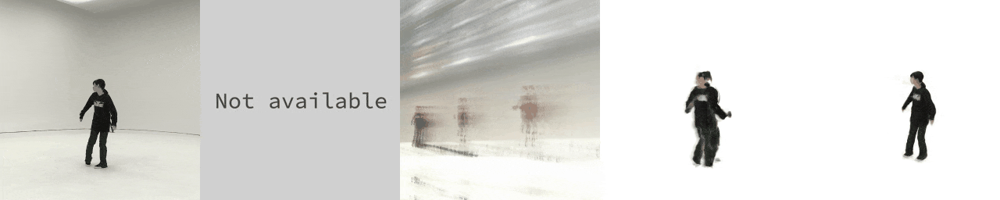
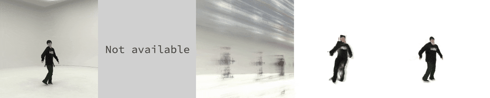
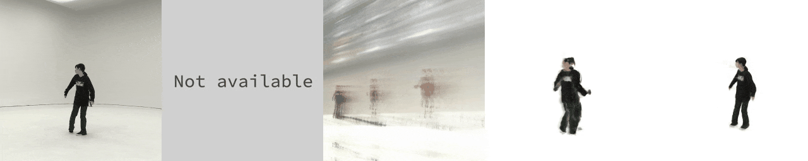